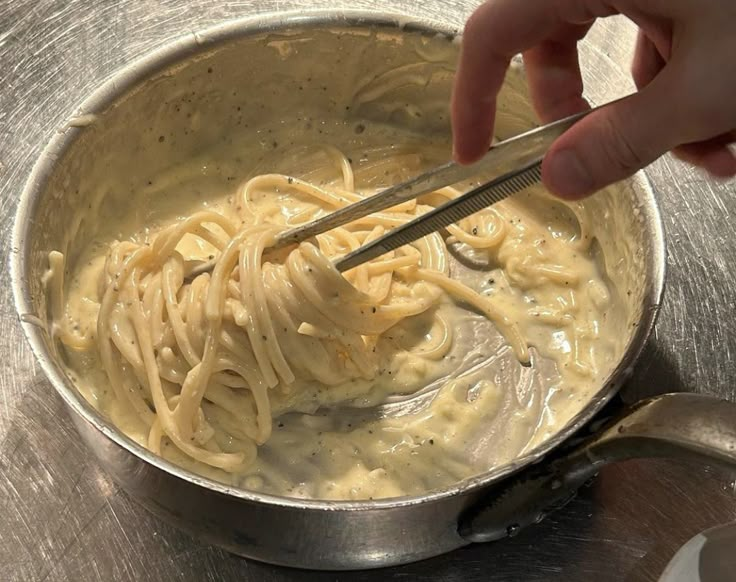

garlic pasta

description
how to make very creamy delish most garlicy pasta ever!!!!!
ingredints
olive oil
pasta noodles
garlic
butter
steps
- Heat olive oil in a medium pan over medium heat. Add garlic and stir until fragrant, 1 to 2 minutes. Add butter and stir constantly until melted
- Pour in 3 cups chicken broth; add pepper and salt. Bring to a boil. Add spaghetti and cook, stirring occasionally, until tender yet firm to the bite, about 12 minutes. Add more chicken broth if pasta starts to stick to the pan
- Add Parmesan cheese, cream, and parsley and mix until thoroughly combined. Serve immediately.
home